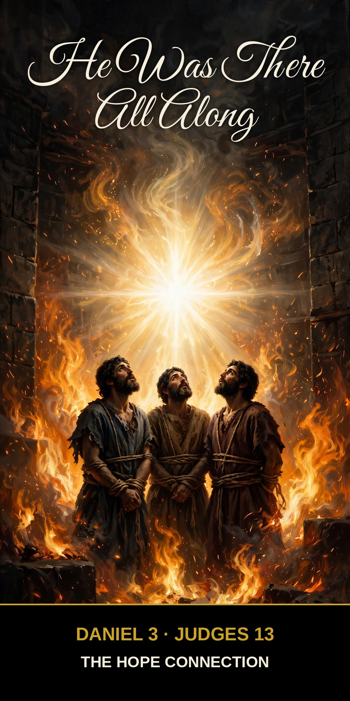

I see four men, unbound, walking in the midst of the fire, and they are not hurt; and the appearance of the fourth is like a son of the gods.
Daniel 3:25 (ESV)
Think Jesus first shows up in Matthew, in a manger in Bethlehem? Friend, He’d been showing up for thousands of years. He was there all along.
A Christophany is an appearance of Jesus Christ in the Old Testament, before His birth. The word tells the story again: Christos means “Christ,” and phainō means “to appear.” A Christophany is Christ appearing — early.
The hard part first: seeing God meant death
Here’s the bad news the whole thing hangs on. When God showed Himself to sinners, sinners expected to die for it — and they weren’t wrong to tremble. “Man shall not see me and live” (Exodus 33:20). Listen to Manoah, after the Angel of the LORD ascended in the flame of his altar: “We shall surely die, for we have seen God” (Judges 13:22). That’s the honest human math: holy God, unholy people — it shouldn’t end well.
And yet, again and again, it did. Because the One who appeared came in mercy.
The appearances
To Hagar — a runaway slave, alone in the desert, the first person in Scripture to meet the Angel of the LORD. He found her, He promised her, “I will surely multiply your offspring” (Genesis 16:10) — speaking not for God but as God. And Hagar gave Him a name: “You are a God of seeing” (Genesis 16:13). The Son was finding runaways long before He had a manger.
To Abraham on Mount Moriah — the Angel called out of heaven and stopped the knife (Genesis 22:11–12), then swore the great oath by Himself (Genesis 22:16). Angels deliver God’s messages; they don’t swear oaths by themselves. God does.
To Joshua before Jericho — a Man with a drawn sword: the Commander of the LORD’s army. Joshua fell on his face and worshiped — and was not rebuked — and heard the words from the burning bush all over again: “Take off your sandals from your feet, for the place where you are standing is holy” (Joshua 5:14–15). Commanders who are mere angels say “do not worship me” (Revelation 22:9). This one said “take off your shoes.”
To three men in a furnace — Shadrach, Meshach, and Abednego, bound and thrown into Nebuchadnezzar’s fire for refusing to bow. The king jumped up and counted: “I see four men, unbound, walking in the midst of the fire, and they are not hurt; and the appearance of the fourth is like a son of the gods” (Daniel 3:25). Honest note: those are a pagan king’s words, not a doctrine statement — but the pattern is hard to miss. When God’s people were in the fire, somebody was already in there with them.
Where it was all heading
Put the pieces together and a pattern emerges: this Angel speaks as God, bears God’s name — “My name is in him” (Exodus 23:21) — accepts worship, forgives sins, and then, once Jesus is born in Bethlehem, the Angel of the LORD simply never appears again in that way. The visits end because the Visitor has come to stay.
That’s a Christophany: the eternal Son, who “was in the beginning with God” (John 1:2), showing up ahead of time in flashes — mercies delivered early by the same Savior who would later deliver them forever. Jesus said it plain: “Before Abraham was, I am” (John 8:58).
The bad news: sinners who see God should die. The good news: the One they saw had already purposed to do the dying for them. Manoah feared, “We shall surely die, for we have seen God.” At the cross, God in the flesh turned it upside down: He saw us — and He died, so we live.
Christ Proclaimed. Jesus is Lord.
Reflect — Questions & Answers
1. Is every appearance of the Angel of the LORD a Christophany? Teachers who love the Bible have read it both ways for centuries, and we should be honest about that. Ordinary angels appear often in Scripture. But the figure who speaks as God in the first person (Genesis 16:10), bears God’s name (Exodus 23:21), and receives worship instead of refusing it (Joshua 5:14; Revelation 22:9) breaks every category of a mere angel. The church’s long and best reading: these are the pre-incarnate Son. We hold it with confidence — and with humility where the text leaves room.
2. What about Melchizedek — was he Jesus too? Careful ground. Hebrews says Melchizedek was “resembling the Son of God” (Hebrews 7:3) — a king-priest with no recorded beginning or end, made like the Son as a picture of Him. Whether he was more than a picture, teachers debate. What’s certain: he was placed in Scripture as a shadow of Christ’s eternal priesthood — and the shadow is glorious enough.
The Hope Connection Podcast
Real hope, no judgment — meeting others where they are in the Name of Jesus. Hear Lewis’s story and new episodes every week.